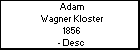

l i n k s
Children with:
Catharine Kessler
Siblings:
Mathias Wagner Kloster
Michael Wagner Kloster
Johann Wagner Kloster
Peter Wagner Kloster
Marianne Wagner Kloster
Eva Wagner Kloster
Children:
Adan Wagner Kessler
Alexander Wagner Kessler
Anna Wagner Kessler
Catharine Wagner Kessler
Adam Wagner Kloster
Born: 1856, Rusia
Married to
Catharine Kessler
Died: Desc , Argentina
Generated by
GenDesigner 2.0 beta 3.6